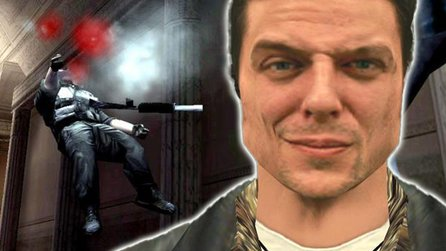
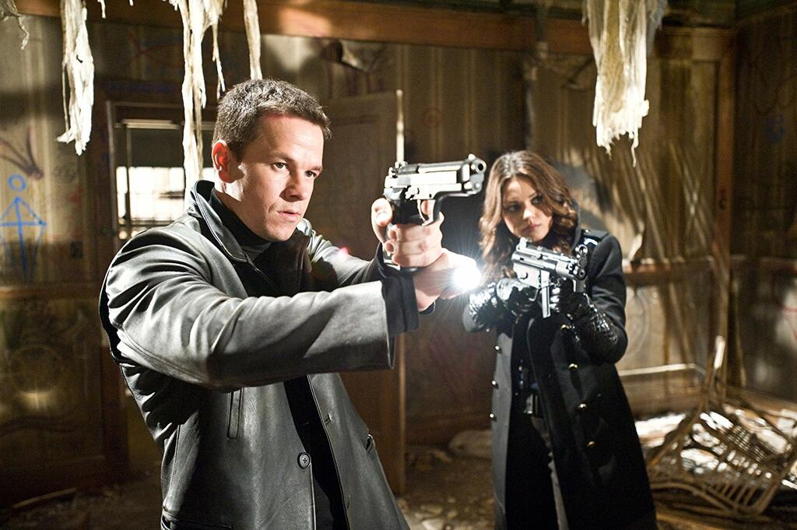

Who is Max Payne?

Max Payne is a video game character created by Finnish developer Remedy Entertainment. He is a former New York City police officer turned vigilante after his wife and child are killed by drug dealers. In the games, Max seeks revenge on those responsible while battling his own demons.
The Games

The Max Payne franchise consists of three main games: The OG Max Payne (2001), Max Payne 2: The Fall of Max Payne (2003), and Max Payne 3 (2012). Each game features third-person shooter gameplay, a film noir-inspired storyline, and the signature "bullet time" mechanic which slows down time during combat.
The Movie

In 2008, a film adaptation of the first Max Payne game was released starring Mike Wahlberg as Max. The movie was absolute garbage!